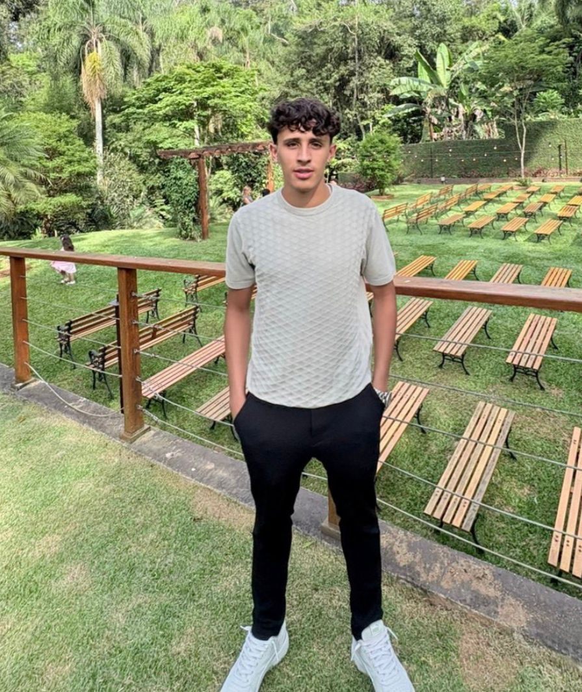

Sistema de Automação de Manutenção
Sistema interno com controle de máquinas, manutenções, permissões por setor, QR Code, imagens, auditoria e painel administrativo.
Node.js • Express • SQLite • JWT • MulterDesenvolvedor com atuação em automação de processos, dados, BI e desenvolvimento web.
Hoje atuo criando soluções que conectam tecnologia e resultado de negócio, com experiência em Node.js, JavaScript, SQL, Power BI, PostgreSQL, SQLite, Supabase e integração de sistemas.

Sou um profissional em transição consolidada para a área de TI, com experiência prática no desenvolvimento de sistemas internos, automações, dashboards e soluções voltadas para otimização de processos empresariais.
Tenho trabalhado em projetos que envolvem desenvolvimento full stack, banco de dados, leitura e tratamento de documentos, integração com APIs, criação de painéis gerenciais e automatização de rotinas operacionais. Meu foco é usar tecnologia para resolver problemas reais e gerar eficiência.
HTML, CSS, JavaScript, Node.js, Express, Next.js, TypeScript, Tailwind CSS
SQL Server, PostgreSQL, SQLite, Supabase, Prisma
Power BI, modelagem de dados, criação de dashboards, análise operacional e financeira
APIs, automação de processos, leitura de PDF, fluxos internos, bots e sistemas corporativos
Git, GitHub, Vercel, Postman, VS Code
Sistemas de Informação, arquitetura de sistemas, segurança, escalabilidade e boas práticas
Sistema interno com controle de máquinas, manutenções, permissões por setor, QR Code, imagens, auditoria e painel administrativo.
Node.js • Express • SQLite • JWT • MulterSolução para importar PDFs operacionais, extrair dados automaticamente e alimentar banco de dados com relatórios e filtros mensais.
Node.js • SQLite • PDF Parse • ExpressEstruturação de fluxo automatizado para atendimento financeiro, com sessões, validações, integração planejada com ERP e suporte a handoff humano.
TypeScript • Prisma • PostgreSQL • API WhatsAppDesenvolvimento de dashboards operacionais e gerenciais para acompanhamento de indicadores, carteira, faturamento, prazos e processos internos.
Power BI • SQL Server • ExcelDesenvolvimento de aplicações com autenticação, controle de dados, relatórios e interface moderna para uso prático no dia a dia.
Next.js • Supabase • PostgreSQL • TailwindProtótipo com detecção de veículos em áreas definidas, registro em banco e análise de tempo de permanência.
Python • OpenCV • YOLO • SQLiteBusco continuar crescendo na área de tecnologia, atuando com desenvolvimento de sistemas, automações, integração de dados e soluções que tragam impacto real para a operação da empresa.
Quero fazer parte de projetos onde eu possa unir visão de negócio, lógica de programação e melhoria contínua de processos.